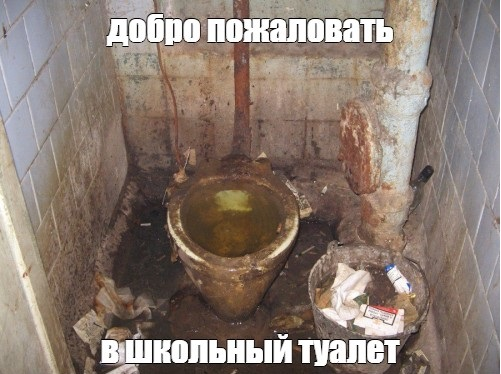

Додики в макдаке
Опубликовано: 28.02.2022
Бонусная история.
(страница 8)
Додики в этом мире.
Одним чудным днем Диана и её подруга Даша договорились встетица и вместе пойти в школу.
Они собрали свои вещи и пошли в пункт встречи.
Возле входа подруги встретились и решили прогулять школу и пойти в макдак.
У входа в макдак они поняли, что не взяли с собой деньги.
Эти два додика решили украсть еду, когда ее принесут какому то челу.
Когда молодому человеку принесли еду, то подруги сразу ее схватили и попытались убежать.
Так как Даша была несомой худенькой девочкой то её быстро схватила охрана.
Диане повезло чуть больше и ей удалось убежать и стащить один биг мак.
Охрана макдака позвонили родителям Даши.
Когда родители приехали Даше было не сладко.
Им пришлось заплатить за испорченную еду так как она была разбросана по всему заведению.
Дома Дашу сильно наказали и забрали все гаджеты на месяц.
Диана думала что ей повезло и ее некто не спалил, но как потом оказалось тот человек которого они попытались ограбить оказался директор ихней школы.
На удивление он не позвонил родителям Дианы.
Но наследующий день Диане лучше было остаться дома потому что если она хочет оставить свою пакость в тайне то ей придется целый месяц убирать двор и драить школьный туалеты.
Мораль всей басни такова, не будь бомжом и не будешь драить сортиры.

Пишу эту историю когда на улице взрывы. (27.02.2022)